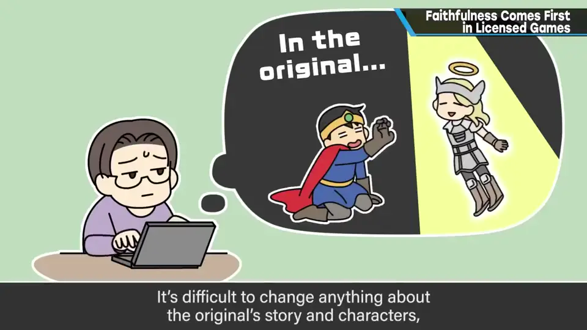
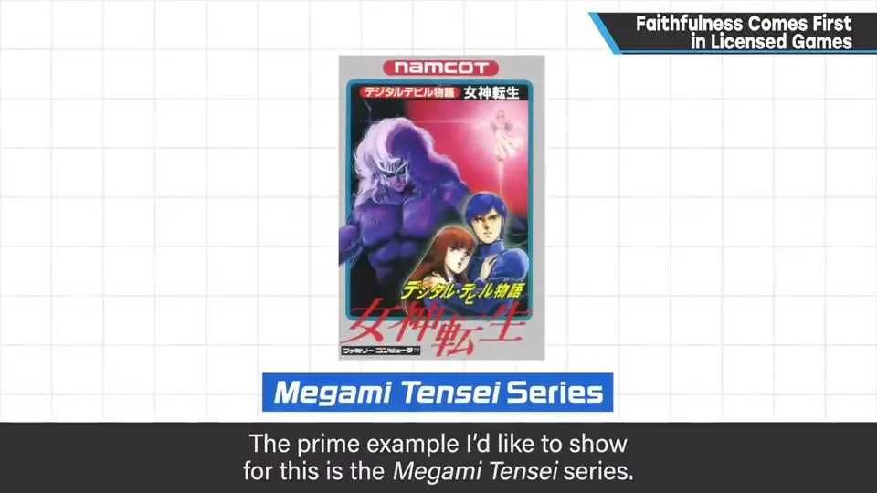
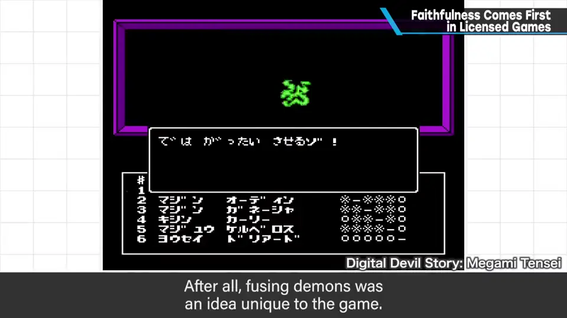
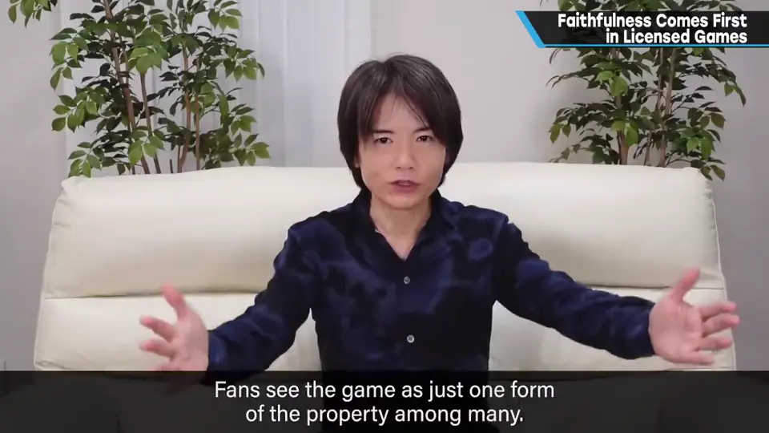
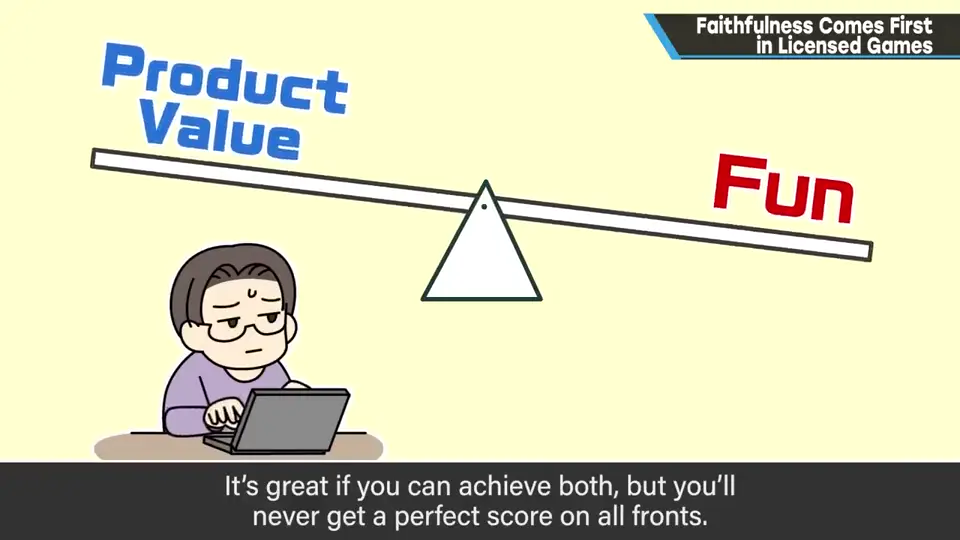
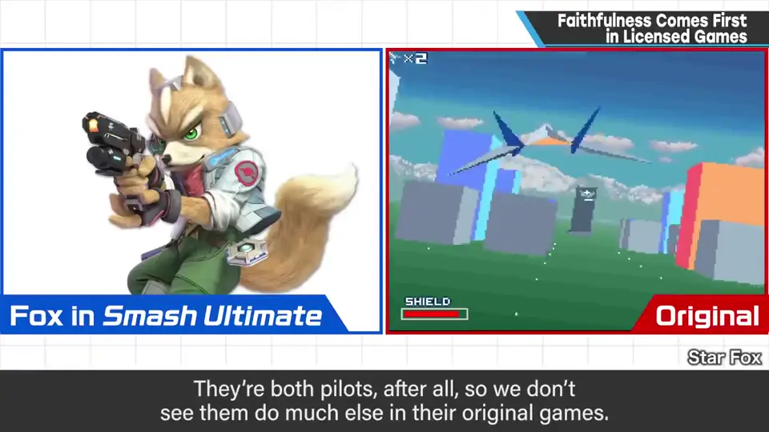

速览
这是一般论，不针对任何作品：所谓版权游戏（虽有例外）一直被说不如普通游戏好玩——从 FC 甚至更早的 80 年代就是如此。樱井认为，以纯粹的乐趣为标准，版权作品不及普通游戏是自然而理所当然的。原因很多，最大的是原作会成为游戏设计的束缚：游戏与其他媒介中故事的合适呈现方式差别很大，两者兼顾、咬合极难；原作的故事和设定难以改动；沿着原作走的故事早已剧透。也有原作设定恰好成为游戏核心的幸运例子，首推《女神转生》系列（《女神异闻录》系列也是其流派）：它最初是小说，「用电脑召唤恶魔战斗」的设定与游戏极其契合——当然没有制作者的功力也做不到，「恶魔合体」就是游戏独有的设定。版权/角色游戏最被需要的是像原作、回应粉丝的喜爱；作为该作品产品群（漫画、动画、手办、活动以及游戏）的一种形态，在合适的时机推出。博弈正确、非常好玩的优先级较低；兼顾产品性与乐趣当然最好，但不可能全方位满分。《火影忍者》系列的战斗演出动画非常出色，樱井猜测游戏和动画制作方曾互相较劲、彼此提高。题外话：《大乱斗》也是角色游戏，不能随便改角色性格和设定，束缚比普通游戏多；能比较自由设计招式的是狐狸和 Captain Falcon——他们是飞行员，原作中动作很少。若 Falcon 在原作中积极使用腰间的枪，也许就成了那样的斗士，也就没有那招 Falcon Punch 了。
1. 版权游戏为何难以好玩 0:03
这是一般论：所谓版权游戏（虽有例外）一直被说不如普通游戏好玩，从 FC 甚至更早的 80 年代起就一直这样说。樱井认为，以纯粹的乐趣为标准，版权作品不及普通游戏，是自然而理所当然的。
最大的理由之一：原作会成为游戏设计的束缚。
- 游戏与其他媒介中故事的合适呈现方式差别很大，要同时满足并咬合起来极难；
- 原作的故事和设定难以改动；
- 沿原作走的故事，已经被剧透了。

2. 幸运的例子：《女神转生》 1:05
也有原作设定恰好成为游戏核心的幸运例子，首推《女神转生》系列（《女神异闻录》系列也是其流派）。它最初是小说，「用电脑召唤恶魔战斗」的设定与游戏契合度极佳。当然，没有游戏制作者的功力也做不到——「恶魔合体」就是游戏独有的设定。


3. 最重要的是像原作 1:43
版权/角色游戏最被需要的是像原作，能回应粉丝的喜爱。它应是该作品产品群的一种形态——漫画、动画、手办、活动以及游戏——并在合适的时机推出。


作为游戏博弈正确、非常好玩，优先级较低。产品性与乐趣都满足当然最好，但不可能全方位满分。
《火影忍者》系列的战斗演出动画非常出色。樱井猜想，游戏方做出了出色的动画，动画方也不甘示弱，互相提高。
4. 题外话：《大乱斗》也是角色游戏 2:45
《大乱斗》也是不折不扣的角色游戏，同样不能随意改变角色个性和设定，所以束缚比普通游戏多。
其中招式能比较自由设计的是狐狸（Fox）和 Captain Falcon——他们是飞行员，原作游戏中几乎没有动作表现。如果 Falcon 在原作中积极使用腰间的枪，他也许就成了那样的斗士，也就没有那招 Falcon Punch 了。

自测题
1. 为什么樱井认为版权游戏不如普通游戏好玩是自然的？
原作是游戏设计的束缚：游戏与其他媒介的故事呈现方式差别大，难以兼顾；原作故事设定难改；沿原作的故事已被剧透。 0:40
2. 樱井举出的「原作设定成为游戏核心」的幸运例子是什么？
《女神转生》系列：原作小说中「用电脑召唤恶魔战斗」的设定与游戏极其契合；恶魔合体则是游戏独有的设定。 1:10
3. 版权游戏最被需要的是什么？
像原作、回应粉丝的喜爱，作为产品群的一种形态在合适时机推出；博弈和乐趣的优先级较低。 1:43